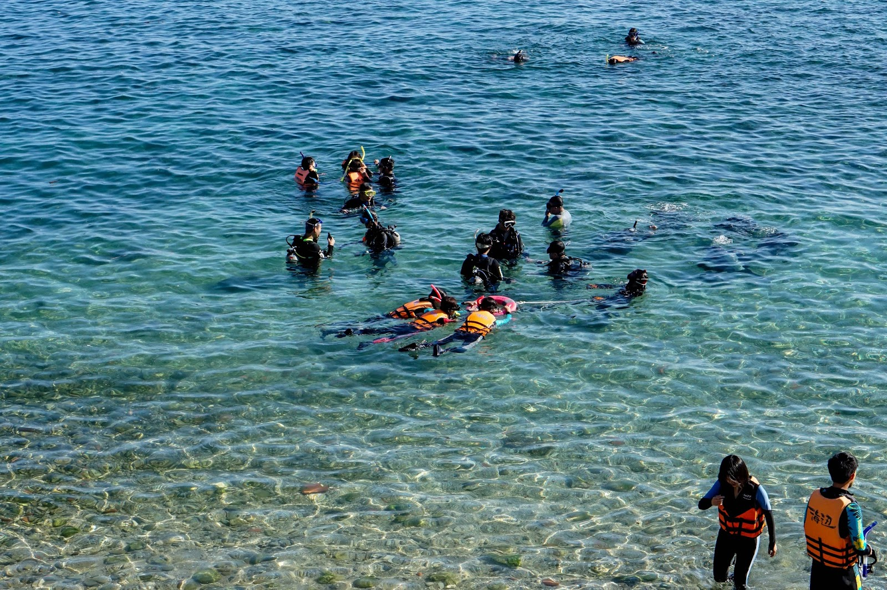

| Paper mill | Sun Moon Lake | Tehua Village |
|---|---|---|
 |
 |
 |
| After pickup from your Taipei hotel, your guide will drive you by comfortable, air-conditioned coach to Puli in the county of Nantou. Stop at the Guangxing Paper Factory for a guided tour to learn about the elaborate process of making paper. | Continue your drive to Sun Moon Lake. As you travel through the scenic area around the lake, admire views of boats docked by the pier and listen to your guide's informative commentary on sites you pass such as Tehua Village, a village of aboriginal people. | Step off the bus for short stops at Wenwu Temple, Tse-En Pagoda and Holy Monk Shrine, among others. Head to your hotel and enjoy its extensive facilities before spending the night.Overnight: Sun Moon Lake Hotel |
| Tianhou Temple | Lung Shan Temple | Garden villa Hotel |
|---|---|---|
 |
 |
 |
| After breakfast, board the bus for a 1-hour drive past small and big towns and valleys on the way to Lukang, a small urban township. Hop off the bus for a guided walking tour of the old town to visit extravagant Tianhou Temple. | Then you will go to the Lung Shan Temple. Both Lung Shan Temple and Tianhou Templs are boasting a large number of halls dedicated to folk deities. | Afterward, board the bus or train (subject to availability)for a scenic 3-hour drive through the Taiwan countryside to Kaohsiung.Overnight: 4-star Garden Villa Hotel or similar in Kaohsiung |
| Kenting | Oluanpi Lighthouse | Maobitou |
|---|---|---|
|  |  |
|
| After breakfast in your garden villa, board your coach for a 1.5- to 2-hour journey to Kenting National Park, Taiwan's southernmost park, and enjoy gorgeous views of the Pacific Ocean, Taiwan Strait, Luzon Strait and the surrounding plains on the way. | Drive through the park and make stops at several places including the Oluanpi Lighthouse and Maobitou, where you can explore by foot with your guide. | Afterward, you'll be dropped off at your hotel in Kaohsiung.Overnight: 4-star Garden Villa Hotel or similar in Kaohsiung |
| Lotus Lake | Chengching Lake | Fo Guang Shan |
|---|---|---|
 |
 |
 |
| Start your day with breakfast and then see Kaohsiung's top attractions on a coach tour. Hop off and walk around with your guide at several stops, like the site of the former British Consulate and the Spring and Autumn Pavilions, a Taoist temple complex by Lotus Lake. | Then, explore the area around Chengching Lake, an artificial lake that is a large water source for the region, and see gorgeous pagodas and other recreational areas. | After a full day of sightseeing, you will either board your coach to return to Taipei or you will be taken to the Kaohsiung Station for a return trip to Taipei on the express train. Upon arrival, you'll be driven back to your Taipei hotel. |
| Price List | |
|---|---|
| Numbers of people | Usual Price |
| Single | $1120 |
| Dual | $2200 |
| Triple | $3300 |
| Four and above | $1100 for each |